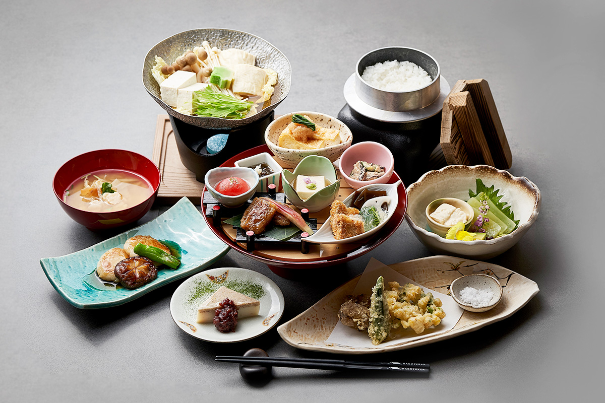
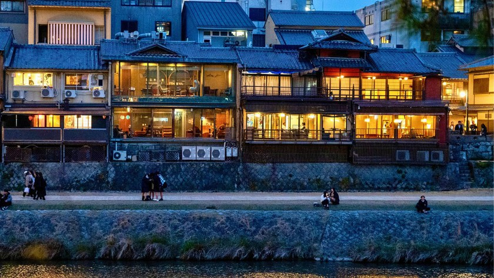
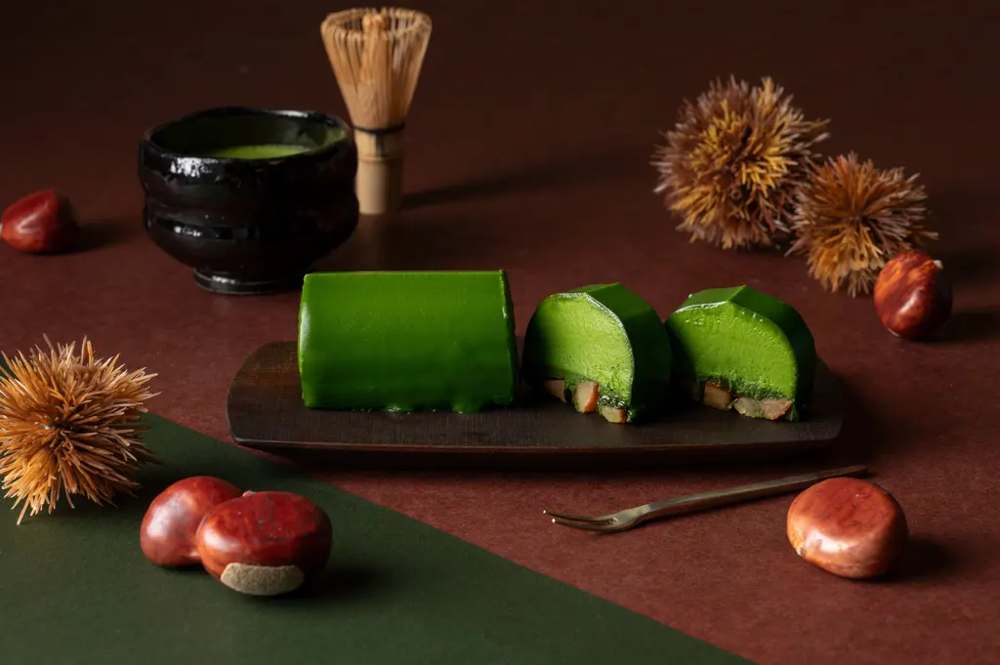

Places To Eat
Three easy choices.
Suisen Kaiseki
Kaiseki is a seasonal multi course meal that shows off japanese ingredients in a simple but beautiful way. You might get tofu skin which is called yuba, river fish, and small side dishes arranged like a mini art gallery. The flavors are more gentle than spicy, and each plate looks very neat and balanced. It’s a quiet dinner where you slow down and taste each bite and flavor.
Kamo River Sushi Bars
Sitting at the counter for omakase is a fun and new way to try fresh sushi. The chef places each piece in front of you: tuna, salmon, mackerel, and more so you eat in a good order! A little soy sauce and wasabi is enough for the sides because the fish should be the main flavor. Lunch is usually less crowded and more affordable, which makes it great for people who are trying it for the first time.
Gion Tea & Sweets
This small cafe serves matcha drinks and wagashi, which are common traditional Japanese sweets. The desserts aren’t overly sugary, they’re light and go well with the slightly bitter green tea. It’s a cozy stop in between temple visits where you can sit down, rest your feet, and enjoy something pretty and simple before heading back out to do more exploring.